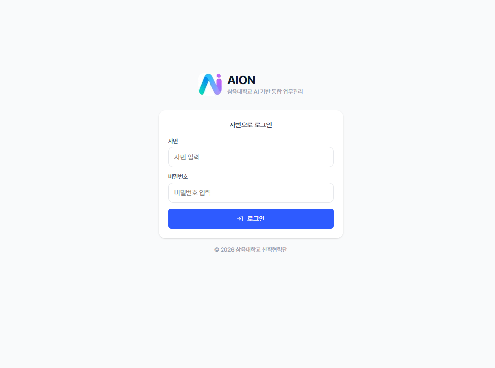
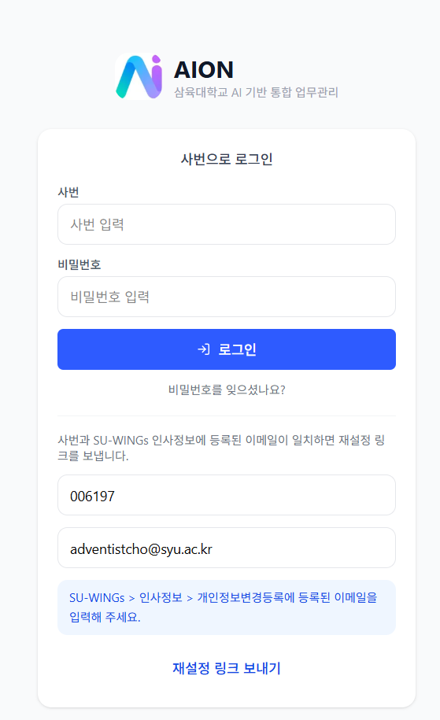
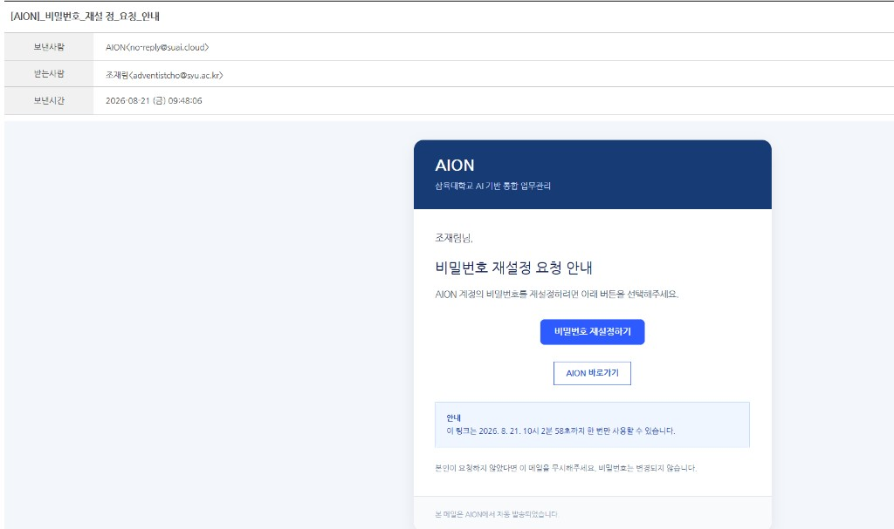
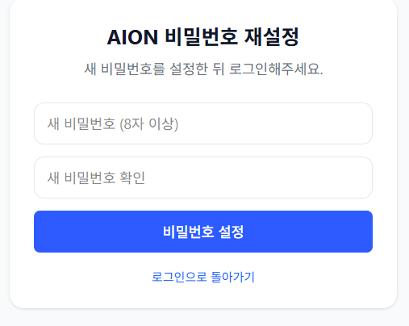

AION 이용 안내
AION 로그인하는 방법 (그룹웨어 계정과 다릅니다)
비밀번호를 다시 설정하는 방법
AION은
그룹웨어(GW) 아이디·비밀번호로 로그인하지 않습니다.
사번과
AION 비밀번호로 로그인합니다. 처음 접속하거나 비밀번호를 잊었다면
아래
2. 비밀번호를 다시 설정하는 방법으로 새 비밀번호를 먼저 만드세요.
1. 로그인하는 방법
- 주소창에
https://suai.cloud를 엽니다.
- AION 비밀번호가 없거나 기억나지 않으면, 먼저 2. 비밀번호 재설정으로 새 비밀번호를 만듭니다.
(첫 접속이든 비밀번호를 잊었든 같은 절차입니다.)
- 사번과 AION 비밀번호를 입력합니다. 그룹웨어 비밀번호가 아닙니다.
- 파란 로그인 버튼을 누릅니다.

그림 1. AION 로그인 화면
2. 비밀번호를 다시 설정하는 방법
첫 로그인이든, 비밀번호를 잊었든 같은 화면입니다. 로그인 화면의 비밀번호를 잊으셨나요?에서 사번과 이메일을 넣으면 설정 링크가 메일로 옵니다.
이메일 먼저 확인하세요. 재설정 메일은 평소 쓰는 주소가 아니라 SU-WINGS에 등록된 이메일로 갑니다.
입력하기 전에 SU-WINGS → 인사정보 → 개인정보변경등록에서 주소를 확인하세요.
링크는 제한 시간 안에 한 번만 쓸 수 있습니다.
한눈에 보기 (5단계)
- AION 로그인 화면에서 비밀번호를 잊으셨나요?를 누릅니다.
- 사번과 SU-WINGS에 등록된 이메일을 넣고 재설정 링크 보내기를 누릅니다.
- 메일(
no-reply@suai.cloud)에서 비밀번호 재설정하기를 누릅니다.
- 새 비밀번호를 8자 이상으로 설정합니다.
- AION으로 돌아가 사번과 새 비밀번호로 로그인합니다.
① 사번·이메일로 링크 받기

그림 2-1. 비밀번호 재설정 요청 화면
- 로그인 화면에서 비밀번호를 잊으셨나요?를 눌러 이 화면으로 옵니다.
- 사번과 SU-WINGS 인사정보에 있는 이메일을 넣습니다.
- 재설정 링크 보내기를 누릅니다.
② 메일에서 설정 화면 열기

그림 2-2. 비밀번호 재설정 안내 메일
no-reply@suai.cloud에서 온 메일을 엽니다.- 파란 비밀번호 재설정하기를 누릅니다.
③ 새 비밀번호를 만들고 로그인

그림 2-3. 새 비밀번호 설정 화면
- 새 비밀번호를 8자 이상으로 두 칸에 똑같이 넣고 저장합니다.
- AION 로그인 화면으로 돌아가 사번과 방금 만든 비밀번호로 로그인합니다.
자주 묻는 질문
- 그룹웨어 비밀번호로 들어가지 않아요.
- AION은 그룹웨어 계정과 따로 운영됩니다. 위 2번 절차로 AION 비밀번호를 만든 뒤 사번과 그 비밀번호로 로그인하세요.
- 재설정 메일이 오지 않아요.
- SU-WINGS 인사정보에 등록된 이메일을 넣었는지 확인하세요. 스팸메일함도 확인해 보세요.
- 링크를 눌렀더니 사용할 수 없다고 나와요.
- 링크는 제한 시간 안에 한 번만 쓸 수 있습니다. 로그인 화면에서 다시 비밀번호를 잊으셨나요?로 새 링크를 받으세요.